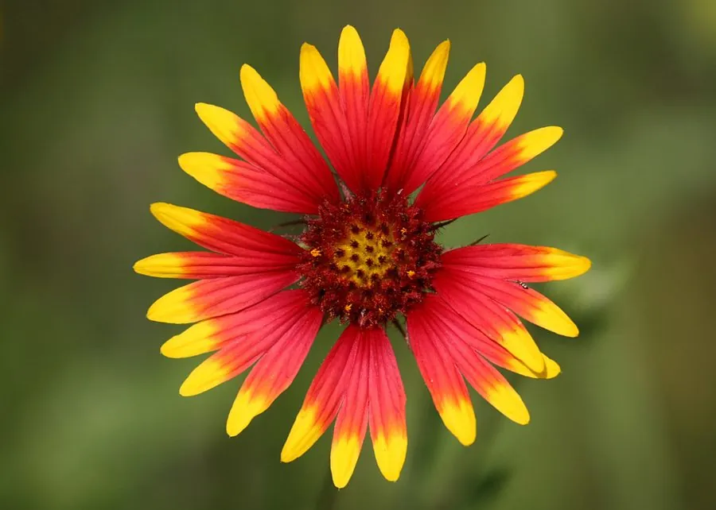

花卉与草本 · 植物界
天人菊 Gaillardia pulchella

菊科一年生草本，舌状花基部红褐、先端金黄，色彩热烈如火，是耐旱花坛与野花组合的常用花卉，原产北美。
- 分类
- 门被子植物门纲木兰纲目菊目科菊科属天人菊属
- 栖息环境
- 北美草原与沙地，喜光、耐旱、耐瘠薄
- 地理分布
- 原产北美洲，中国各地花坛引种栽培
- 保护级别
- 暂无评估
物种志
天人菊为菊科天人菊属一年生草本，株高 20–60 厘米，茎直立或斜生，全株被短毛。叶片长椭圆形至披针形，互生。头状花序单生，直径 4–7 厘米，舌状花基部红褐色、先端金黄色，中央管状花紫红色，花期 6–10 月；果实为瘦果。
天人菊原产北美洲的草原与沙地，喜阳光充足、温暖干燥和排水良好的环境，耐旱耐瘠薄，适应性强。它舌状花基部红褐、先端金黄，色彩热烈如火，是耐旱花坛、岩石园和野花组合的常用花卉；在北美也是常见的路旁野花，能自播繁衍。栽培以播种为主，需保证充足光照，忌积水和阴湿。
形态与习性
- 株高20–60 厘米，茎直立或斜生
- 花期6–10 月
- 果期花后结瘦果
- 光照极喜光
- 水分耐旱，忌积水
- 土壤疏松、排水良好的沙质土
- 繁殖以播种为主
- 主要用途花坛、岩石园、野花组合
趣味知识
- 天人菊舌状花基部红褐、先端金黄，色彩像燃烧的火焰。
- 它原产北美草原和沙地，耐旱耐瘠薄，适应性强。
- 天人菊是野花组合和岩石园的常用花卉，能自播繁衍。
- 栽培需充足光照，积水和阴湿会导致生长不良。